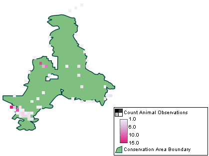

Os resultados são exibidos em um formato de grade (gráfico raster) especificado pelo usuário com resultados agregados com base no tamanho de grade definido. Os resultados podem ser visualizados em uma tabela ou em um mapa.
 |
Consulta em Grade de Entidade |
Os valores calculados podem ser valores relacionados a modelos de dados (número total de observações, idade média, etc.).